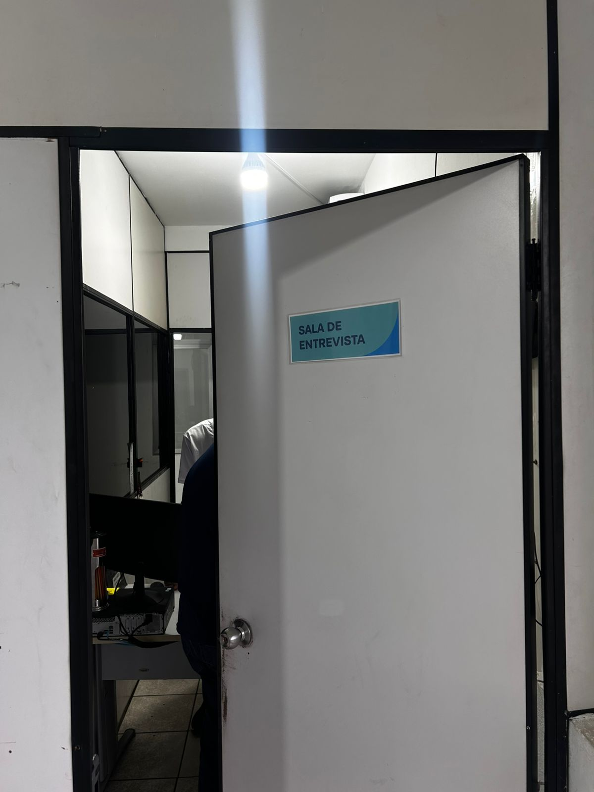

<template id="cena-02-template">
  <div data-composition-id="cena-02" data-width="1920" data-height="1080">
    
    <div class="overlay"></div>
    <div class="scene-content">
      <div class="title">Unidade São Mateus</div>
      
      <div class="description">
        Iniciativa voltada à <span class="highlight">segurança operacional</span> por meio da avaliação cognitiva de quem está ao volante.
      </div>
    </div>

    <style>
      #cena-02 {
        width: 1920px;
        height: 1080px;
        overflow: hidden;
        background: #1e3460;
        font-family: "Satoshi Variable", sans-serif;
        color: #fdfbf4;
        position: relative;
      }
      .bg-photo {
        position: absolute;
        width: 100%;
        height: 100%;
        object-fit: cover;
        opacity: 0.4;
      }
      .overlay {
        position: absolute;
        width: 100%;
        height: 100%;
        background: linear-gradient(164deg, rgba(30, 52, 96, 0.85) 15.4%, rgba(0, 105, 179, 0.75) 86.5%);
      }
      .scene-content {
        position: relative;
        z-index: 2;
        width: 100%;
        height: 100%;
        display: flex;
        flex-direction: column;
        align-items: center;
        justify-content: center;
        gap: 32px;
        padding: 120px 200px;
        box-sizing: border-box;
        background: rgba(30, 52, 96, 0.4);
      }
      .title {
        font-size: 96px;
        font-weight: 900;
        text-transform: uppercase;
        letter-spacing: -0.02em;
        text-align: center;
        line-height: 1;
      }
      .subtitle {
        font-size: 56px;
        font-weight: 600;
        text-align: center;
        color: #86e5ff;
        line-height: 1.2;
      }
      .logo-vab {
        height: 44px;
        width: auto;
        opacity: 0;
        filter: brightness(0) saturate(100%) invert(88%) sepia(36%) saturate(538%) hue-rotate(155deg) brightness(101%) contrast(101%);
      }
      .description {
        font-size: 36px;
        font-weight: 400;
        text-align: center;
        max-width: 1400px;
        line-height: 1.4;
        color: rgba(253, 251, 244, 0.9);
      }
      .highlight {
        color: #86e5ff;
        font-weight: 700;
      }
    </style>

    <script src="https://cdn.jsdelivr.net/npm/gsap@3.14.2/dist/gsap.min.js"></script>
    <script>
      window.__timelines = window.__timelines || {};
      const tl = gsap.timeline({ paused: true });

      // Photo scale in
      tl.fromTo(".bg-photo",
        { scale: 1.2, opacity: 0 },
        { scale: 1, opacity: 0.4, duration: 1.2, ease: "power3.out" },
        0
      );

      // Title entrance
      tl.fromTo(".title",
        { y: 50, opacity: 0 },
        { y: 0, opacity: 1, duration: 0.7, ease: "power3.out" },
        0.3
      );

      // Logo VAB entrance
      tl.fromTo(".logo-vab",
        { y: 20, opacity: 0, scale: 0.9 },
        { y: 0, opacity: 1, scale: 1, duration: 0.6, ease: "back.out(1.3)" },
        0.6
      );

      // Description entrance
      tl.fromTo(".description",
        { y: 30, opacity: 0 },
        { y: 0, opacity: 1, duration: 0.8, ease: "expo.out" },
        0.9
      );

      // Highlight pulse
      tl.to(".highlight",
        { color: "#86e5ff", textShadow: "0 0 20px rgba(134,229,255,0.6)", duration: 1.0, ease: "sine.inOut", yoyo: true, repeat: 2 },
        2.5
      );

      // Title breath
      tl.to(".title",
        { scale: 1.02, duration: 1.5, ease: "sine.inOut", yoyo: true, repeat: 3 },
        5.0
      );

      // Logo VAB glow
      tl.to(".logo-vab",
        { filter: "brightness(1.2) saturate(100%) invert(88%) sepia(36%) saturate(538%) hue-rotate(155deg) brightness(101%) contrast(101%) drop-shadow(0 0 10px rgba(134,229,255,0.5))", duration: 1.0, ease: "sine.inOut", yoyo: true, repeat: 3 },
        7.0
      );

      // Description glow
      tl.to(".description",
        { color: "rgba(253,251,244,1)", duration: 1.2, ease: "sine.inOut", yoyo: true, repeat: 2 },
        10.0
      );

      // Title pulse to end
      tl.to(".title",
        { scale: 1.02, duration: 1.5, ease: "sine.inOut", yoyo: true, repeat: 2 },
        12.0
      );

      // Photo slow zoom (extended to end)
      tl.to(".bg-photo",
        { scale: 1.08, duration: 15.0, ease: "none", overwrite: "auto" },
        1.0
      );

      window.__timelines["cena-02"] = tl;
    </script>
  </div>
</template>
